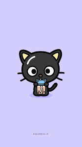
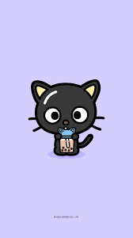

Hello Kitty: An iconic white cat with a red bow, created by Sanrio in 1974, representing friendship and happiness.
My Melody: A sweet rabbit character with a hood, introduced by Sanrio in 1975, known for her love of baking and making new friends.
 Pompompurin: A golden retriever character introduced in 1996, known for his love of food, particularly pudding.
Keroppi: A cheerful frog character introduced in 1988, known for his adventurous spirit and love of sports.
Pompompurin: A golden retriever character introduced in 1996, known for his love of food, particularly pudding.
Keroppi: A cheerful frog character introduced in 1988, known for his adventurous spirit and love of sports.
 Badtz-Maru: A mischievous penguin character introduced in 1993, known for his love of pranks and punk-rock style.
Badtz-Maru: A mischievous penguin character introduced in 1993, known for his love of pranks and punk-rock style.
 Cinnamoroll: A white puppy character introduced in 2002, known for his long ears and ability to fly using his fluffy tail.
Cinnamoroll: A white puppy character introduced in 2002, known for his long ears and ability to fly using his fluffy tail.
 Kuromi: A rebellious rabbit character introduced in 2005, known for her gothic style and love of mischief.
Kuromi: A rebellious rabbit character introduced in 2005, known for her gothic style and love of mischief.
 Aggretsuko: A red panda character introduced in 2015, known for her office worker persona and love of heavy metal music.
Aggretsuko: A red panda character introduced in 2015, known for her office worker persona and love of heavy metal music.
 Gudetama: A lazy egg character introduced in 2013, known for his unmotivated attitude and love of lounging around.
Chococat: A black cat character introduced in 1996, known for his love of all things chocolate and his laid-back demeanor.

Little Twin Stars: Kiki and Lala, introduced in 1975, are celestial siblings who spread happiness and goodwill with their magical powers.
Gudetama: A lazy egg character introduced in 2013, known for his unmotivated attitude and love of lounging around.
Chococat: A black cat character introduced in 1996, known for his love of all things chocolate and his laid-back demeanor.

Little Twin Stars: Kiki and Lala, introduced in 1975, are celestial siblings who spread happiness and goodwill with their magical powers.
 Tuxedo Sam: A dapper penguin character introduced in 1979, known for his love of exploring and collecting bowties.
Pochacco: A sporty dog character introduced in 1989, known for his energetic personality and love of racing.
Sugarbunnies: A pair of bunny siblings, introduced in 2004, known for their sweet and playful nature in the Sugar Kingdom.
Hangyodon: A quirky fish character introduced in 1984, known for his unique appearance and humorous antics in the underwater world.
Tuxedo Sam: A dapper penguin character introduced in 1979, known for his love of exploring and collecting bowties.
Pochacco: A sporty dog character introduced in 1989, known for his energetic personality and love of racing.
Sugarbunnies: A pair of bunny siblings, introduced in 2004, known for their sweet and playful nature in the Sugar Kingdom.
Hangyodon: A quirky fish character introduced in 1984, known for his unique appearance and humorous antics in the underwater world.
Please be honest when answering the quiz!